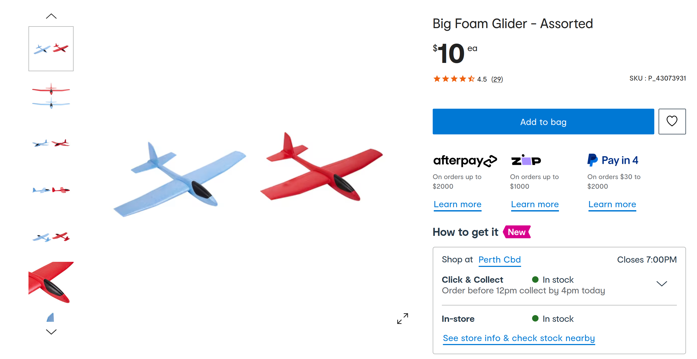
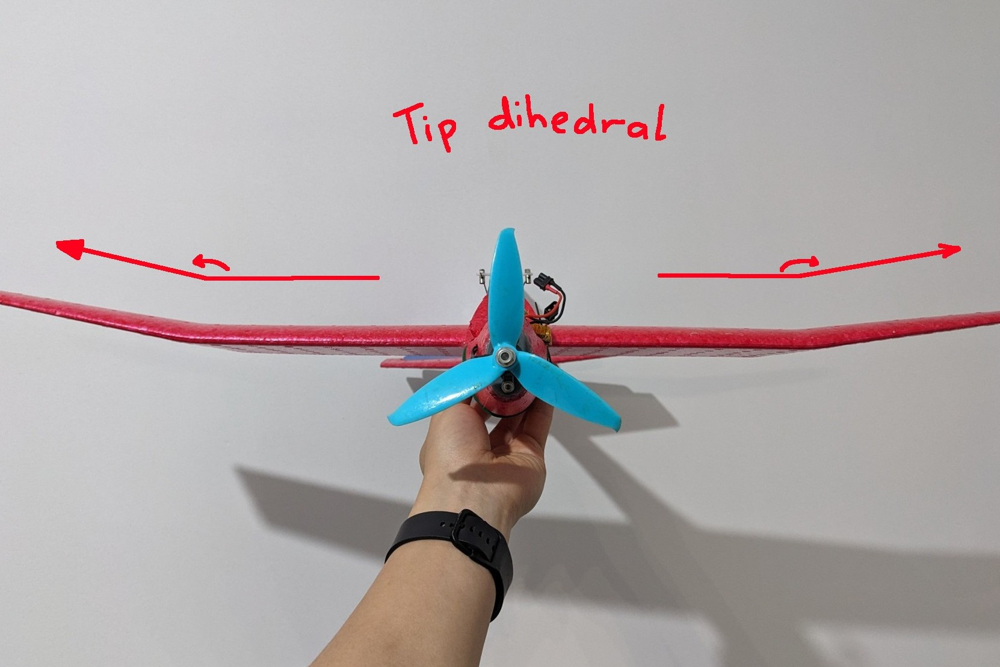
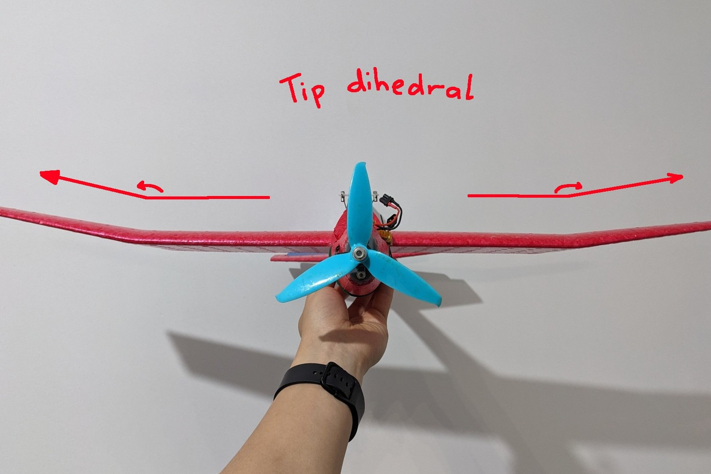
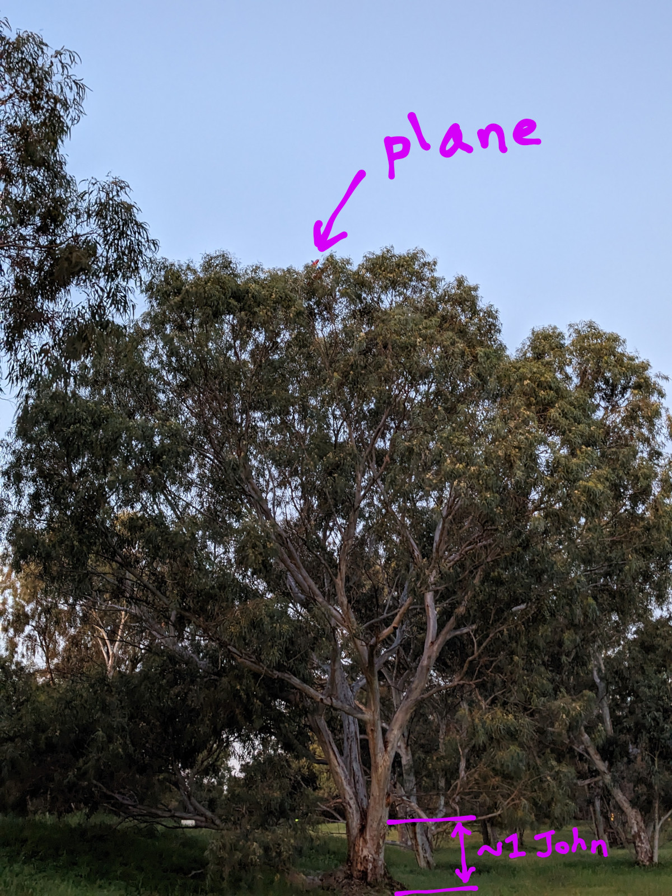

A low budget aerial platform

Turns out you can get a large foam glider for only $10. These are designed to be thrown around so are made from tough EPP foam, and their 84 cm wing span with a deep wing chord across the entire length should generate plenty of lift and allow for a sizeable payload.
With just another ~$20 in electronics, these can be converted into a full fledged plane. I've cut control surfaces out of the tail horizontal and vertical stabilisers, and extended them with some flat pieces of foam.
There were no exact measurements used here, I just wanted more surface area on my aerodynamic control surfaces for additional control authority, particularly at lower air speeds where they are less effective.
Later flight testing showed that at cruising speed, these extensions may not have been needed at all.
There are two 9g servos, one for the elevator providing pitch control and one for the rudder controlling the yaw axis. For simplicity and to reduce cost, there are no ailerons. Roll control relies on yaw-roll coupling via the tip dihedral of the wings, which also provides passive roll stability.
 

The plane is also fitted with a rudimentary flight controller I built to provide auto-levelling in both pitch and roll axes via two PID loops running at 100 Hz.
Ideally each axis would be controlled via a pair of cascaded PID loops, as we are trying to control orientation angle (displacement) by actuating aerodynamic control surfaces (controlling angular acceleration),
but the simpler approach minimises tuning parameters and I believe gives the best chance of chance of a stable flight without any tuning.
Below is a video comparing flight with and without flight controller assistance. The flight controller imposes angle limits on the orientation of the plane, helping to avoid stall and loss of lift from extreme bank angles.
Unfortunately before this idea could be explored further, the plane ended up in a very tall tree during a test flight.
It then mysteriously vanished before a rescue mission could be mounted.
